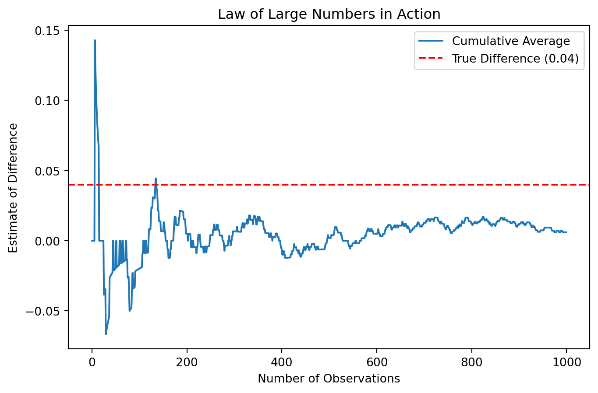
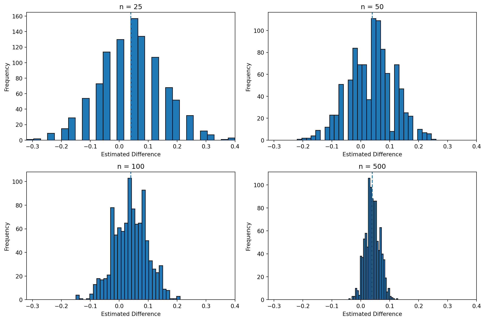

import numpy as np
np.random.seed(123)
pi_A=0.22
pi_B=0.18
A = np.random.binomial(1, pi_A, 1000)
B = np.random.binomial(1, pi_B, 1000)
print(A[:10])
print(B[:10])[0 0 0 0 0 0 1 0 0 0]
[0 0 0 0 0 0 0 0 0 0]Simulating Key Ideas from Classical Frequentist Statistics
Yunqing Zhao
April 13, 2026
I am interested in whether different language of “calls to action” can influence user behavior. Specifically I want to compare two version of messages and determine which one can lead to more sign up.
I do the A/B testing to get the answer. The visitors are randomly assigned to two different groups, one is to see the language “Sign up for our newsletter here!”, others see “Stay up to date by signing up!” In this case, I compare the proportion of users who sign up under each version of “calls to action.”
Let \(\pi_A\) denote the sign-up probability for visitors who see CTA A, and \(\pi_B\) denote the probability for those who see CTA B. The main quantity of interest is the difference between these two probabilities, defined as \(\theta = \pi_A - \pi_B\). This represents how much more effective one version of the call to action is compared to the other. We estimate probability using sample data. Since each observation is either 0 or 1, the sample mean corresponds to the proportion of users who sign up. Therefore, we estimate \(\theta\) using the difference in sample means, \(\hat{\theta} = \bar{X}_A - \bar{X}_B\).
Suppose that the sign-up probability for CTA A is \(\pi_A = 0.22\), while for CTA B it is \(\pi_B = 0.18\). This means that the true difference in sign-up rates is \(\theta = 0.04\).
To generate data, we simulate 1,000 observations for each group using a Bernoulli distribution. Each observation takes the value 1 if the user signs up and 0 otherwise. These simulated samples will be used throughout the rest of the analysis.
# Compute element-wise differences
diff = A - B
# Compute cumulative average
cum_avg = np.cumsum(diff) / np.arange(1, len(diff) + 1)
# Plot
import matplotlib.pyplot as plt
plt.figure(figsize=(8,5))
plt.plot(cum_avg, label="Cumulative Average")
plt.axhline(y=0.04, color='red', linestyle='--', label="True Difference (0.04)")
plt.xlabel("Number of Observations")
plt.ylabel("Estimate of Difference")
plt.title("Law of Large Numbers in Action")
plt.legend()
plt.show()
From the plot, we can see that the estimate of the difference is unstable when the sample size is small. However, as the sample size increased, the estimate becomes stable. So, the Law of Large Numbers shows that larger sample sizes lead to more stable estimates.
One way to estimate uncertainty is the bootstrap. The basic idea is to repeatedly resample from the observed data, with replacement, and recompute the statistic every time. The variation across those resampled estimates tells us how much our estimator tends to fluctuate. In this case, we use the standard deviation of the bootstrapped estimates as our estimate of the standard error.
# Point estimate from the original sample
theta_hat = A.mean() - B.mean()
# Bootstrap procedure
np.random.seed(123)
bootstrap_thetas = []
for _ in range(1000):
A_star = np.random.choice(A, size=1000, replace=True)
B_star = np.random.choice(B, size=1000, replace=True)
theta_star = A_star.mean() - B_star.mean()
bootstrap_thetas.append(theta_star)
bootstrap_thetas = np.array(bootstrap_thetas)
# Bootstrapped standard error
bootstrap_se = bootstrap_thetas.std(ddof=1)
# Analytical standard error
pi_hat_A = A.mean()
pi_hat_B = B.mean()
n_A = len(A)
n_B = len(B)
analytical_se = np.sqrt(
(pi_hat_A * (1 - pi_hat_A)) / n_A +
(pi_hat_B * (1 - pi_hat_B)) / n_B
)
# 95% confidence interval using the bootstrap standard error
ci_lower = theta_hat - 1.96 * bootstrap_se
ci_upper = theta_hat + 1.96 * bootstrap_se
print("Point estimate (theta_hat):", round(theta_hat, 4))
print("Bootstrapped SE:", round(bootstrap_se, 4))
print("Analytical SE:", round(analytical_se, 4))
print("95% CI: [", round(ci_lower, 4), ",", round(ci_upper, 4), "]")Point estimate (theta_hat): 0.006
Bootstrapped SE: 0.0177
Analytical SE: 0.018
95% CI: [ -0.0288 , 0.0408 ]import numpy as np
import matplotlib.pyplot as plt
np.random.seed(123)
sample_sizes = [25, 50, 100, 500] #Define a list of sample sizes to examine how the sampling distribution changes as the sample size increases.
all_theta_hats = {}
#For each sample size, we initialize a list to store the estimates of the difference in means.
for n in sample_sizes:
theta_hats = []
for _ in range(1000): #For each sample size, we repeat the simulation 1,000 times to approximate the sampling distribution.
A_sample = np.random.binomial(1, pi_A, n)
B_sample = np.random.binomial(1, pi_B, n)
theta_hat = A_sample.mean() - B_sample.mean()
theta_hats.append(theta_hat)
all_theta_hats[n] = np.array(theta_hats)
# Use common x-axis limits for better comparison
all_values = np.concatenate(list(all_theta_hats.values()))
x_min = all_values.min()
x_max = all_values.max()
fig, axes = plt.subplots(2, 2, figsize=(12, 8))
axes = axes.flatten()
for i, n in enumerate(sample_sizes):
axes[i].hist(all_theta_hats[n], bins=30, edgecolor='black')
axes[i].axvline(x=0.04, linestyle='--')
axes[i].set_title(f"n = {n}")
axes[i].set_xlabel("Estimated Difference")
axes[i].set_ylabel("Frequency")
axes[i].set_xlim(x_min, x_max)
plt.tight_layout()
plt.show()
For \(n = 25\), the histogram looks symmetric and the distribution is spread out. There is a lot of variability, which suggests that the estimate can fluctuate quite a bit when the sample size is small.
For \(n = 50\), compared to \(n = 25\), it becomes slightly more symmetric and stable. The extreme values are less frequent, though there is still noticeable variability.
For \(n = 100\), the shape becomes more clearly centered. The spread is narrower. At this point, it begins to resemble a bell-shaped distribution, although it is not perfectly smooth yet.
For \(n = 500\), the distribution is much more concentrated and clearly bell-shaped. The most of the values are clustered closely around the true difference. The variability is much smaller compared to the smaller sample sizes.
Overall, these patterns illustrate the Central Limit Theorem in action. As the sample size increases, the sampling distribution of \(\hat{\theta}\) becomes more stable and more closely approximates a Normal distribution, even though the underlying data come from Bernoulli distributions.
A hypothesis test allows us to assess whether the observed difference could have occurred by random chance. In this case, we set up a null hypothesis \(H_0: \theta = 0\), meaning that there is no difference in sign-up rates between CTA A and CTA B. The alternative hypothesis is \(H_1: \theta \ne 0\), which suggests that there is a difference.
The goal is to determine whether the data provide enough evidence to reject the null hypothesis.
To perform the test, we standardize our estimator by subtracting the null value and dividing by its standard error. This gives us a test statistic:
\[ z = \frac{\hat\theta - 0}{SE(\hat\theta)} \]
By the Central Limit Theorem, this statistic is approximately Normally distributed when the sample size is large. Under the null hypothesis, it follows a standard Normal distribution, which allows us to compute a p-value.
We typically compare the p-value to a threshold of 0.05. If the p-value is below 0.05, we reject the null hypothesis and conclude that there is a meaningful difference. If it is above 0.05, we do not reject the null hypothesis, meaning the observed difference could be due to random variation.
Although this is sometimes referred to as a t-test, in our setting the test statistic is approximately Normal rather than following an exact t-distribution. This is because our data come from Bernoulli distributions, not Normal distributions. However, for large sample sizes, the difference between the t-distribution and the Normal distribution becomes negligible, so using the Normal approximation is appropriate here.
Z statistic: 3.9456
p-value: 0.0001From the output, we get the corresponding p-value is very small (0.0001), which suggests that the observed difference would be highly unlikely if the null hypothesis were true.
Since the p-value is well below the 0.05 threshold, we reject the null hypothesis. This provides strong evidence that there is a meaningful difference in sign-up rates between CTA A and CTA B.
In practical terms, this suggests that the choice of call-to-action wording can have a real impact on user behavior, rather than the observed difference being due to random variation.
It turns out that the two-sample test we performed earlier can also be written as a simple linear regression. This connection is useful because it shows that hypothesis testing and regression are closely related, and it means we can use the same tools and software for both tasks.
To set this up, we combine the data from both groups into a single dataset. We define an outcome variable \(Y_i\), which equals 1 if the user signs up and 0 otherwise. We also define an indicator variable \(D_i\), which equals 1 if the observation comes from group A and 0 if it comes from group B.
We then fit the following regression model:
\[ Y_i = \beta_0 + \beta_1 D_i + \varepsilon_i \]
In this model, \(\beta_0\) represents the average outcome for group B, which corresponds to the sign-up rate for CTA B. The term \(\beta_0 + \beta_1\) represents the average outcome for group A, or the sign-up rate for CTA A. Therefore, \(\beta_1\) captures the difference in sign-up rates between the two groups. In fact, the estimated coefficient \(\hat{\beta}_1\) is numerically equal to the difference in sample means that we computed earlier, \(\hat{\theta} = \bar{X}_A - \bar{X}_B\).
We now fit this regression using our simulated data:
OLS Regression Results
==============================================================================
Dep. Variable: y R-squared: 0.000
Model: OLS Adj. R-squared: -0.000
Method: Least Squares F-statistic: 0.1107
Date: Mon, 13 Apr 2026 Prob (F-statistic): 0.739
Time: 15:02:19 Log-Likelihood: -1020.0
No. Observations: 2000 AIC: 2044.
Df Residuals: 1998 BIC: 2055.
Df Model: 1
Covariance Type: nonrobust
==============================================================================
coef std err t P>|t| [0.025 0.975]
------------------------------------------------------------------------------
const 0.2010 0.013 15.766 0.000 0.176 0.226
x1 0.0060 0.018 0.333 0.739 -0.029 0.041
==============================================================================
Omnibus: 411.678 Durbin-Watson: 1.995
Prob(Omnibus): 0.000 Jarque-Bera (JB): 721.381
Skew: 1.469 Prob(JB): 2.26e-157
Kurtosis: 3.158 Cond. No. 2.62
==============================================================================
Notes:
[1] Standard Errors assume that the covariance matrix of the errors is correctly specified.From the regression output, the estimated coefficient on the indicator variable is approximately 0.006, which matches the difference in sample means computed earlier. The estimated standard error is also very close to what we obtained in the previous section.
However, the p-value from the regression is relatively large (0.739), which suggests that the observed difference is not statistically significant under this approach. This contrasts with the earlier result based on the bootstrap standard error, where we found strong evidence against the null hypothesis.
This difference because the regression framework uses a pooled variance assumption, while the bootstrap approach directly estimates variability from the data. In this case, the regression based inference suggests that the difference could be due to random variation.
In practice, it can be tempting to check results early and often. For example, instead of waiting until all 1,000 users have been assigned to each group, we might look at the results after every 100 users and stop the experiment as soon as we see a statistically significant result.
At first, this might seem reasonable, but it actually creates a problem. A single hypothesis test at the 0.05 level has a 5% chance of producing a false positive. However, when we repeatedly test the data as it accumulates, each additional check creates another chance to falsely reject the null hypothesis. As a result, the overall probability of making at least one false discovery becomes much higher than 5%.
To see this more clearly, we can simulate this situation. We assume that there is actually no difference between the two groups, so the null hypothesis is true.
import numpy as np
from scipy.stats import norm
np.random.seed(123)
def run_experiment():
# True probabilities (no difference)
pi_A = 0.20
pi_B = 0.20
# Generate full data
A = np.random.binomial(1, pi_A, 1000)
B = np.random.binomial(1, pi_B, 1000)
# Check results every 100 observations
for n in range(100, 1001, 100):
A_sub = A[:n]
B_sub = B[:n]
theta_hat = A_sub.mean() - B_sub.mean()
# Standard error
se = np.sqrt(
(A_sub.mean() * (1 - A_sub.mean()) / n) +
(B_sub.mean() * (1 - B_sub.mean()) / n)
)
# Z test
z = theta_hat / se
p_value = 2 * (1 - norm.cdf(abs(z)))
# If any test is significant, stop early
if p_value < 0.05:
return 1
return 0
# Repeat many times
results = [run_experiment() for _ in range(10000)]
false_positive_rate = np.mean(results)
print("Estimated false positive rate with peeking:", round(false_positive_rate, 4))Estimated false positive rate with peeking: 0.199In this simulation, we assume that there is no difference between the two groups, so the null hypothesis is true. However, since we repeatedly check the results as data accumulate, we often end up observing at least one statistically significant result by chance.
The estimated false positive rate with peeking is about 0.199, which is much higher than the 5% level of a single hypothesis test. This clearly shows that repeatedly testing the data inflates the Type I error rate. This means that peeking at results and stopping early can lead to misleading conclusions. Even when there is no real difference, we may incorrectly declare a winner simply because we checked the results multiple times. To avoid this issue, experiments should either use a fixed sample size.